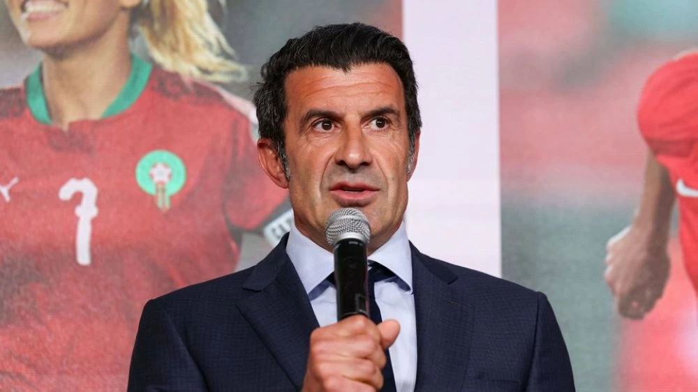

Gianni Infantino : « Le Maroc s’est établi comme une puissance mondiale de football »

Fouzi Lekjaa: le Maroc croit en ses chances d'abriter le Mondial 2030
Walid Regragui : "Je suis très heureux pour mon pays"

Mondial 2030. L'équipe nationale s'entraine dans une ambiance détendu
Luis Figo estime que le Maroc, l'Espagne et le Portugal peuvent briguer le titre